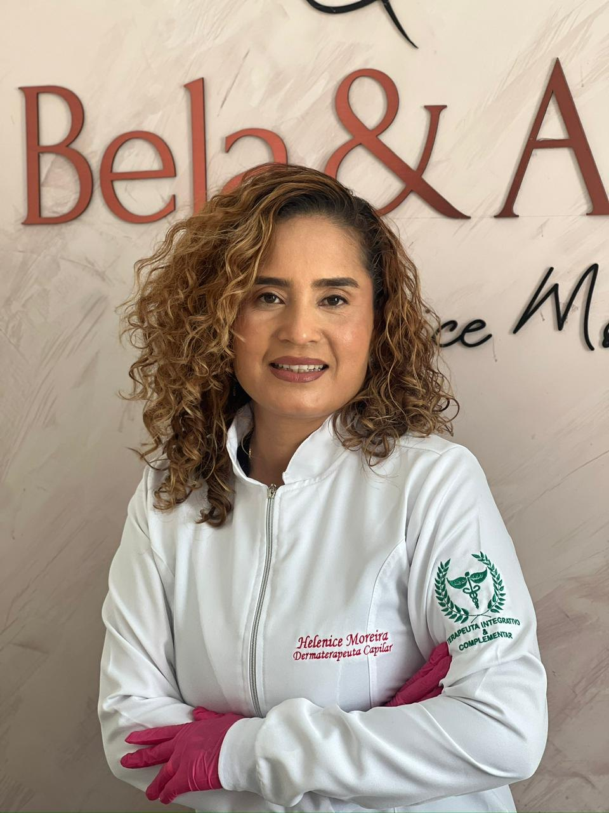
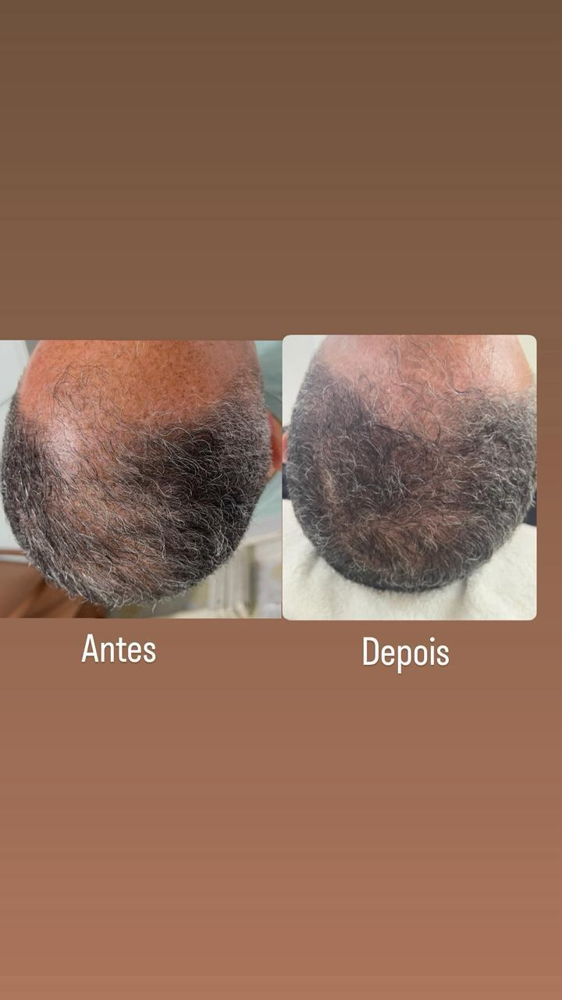
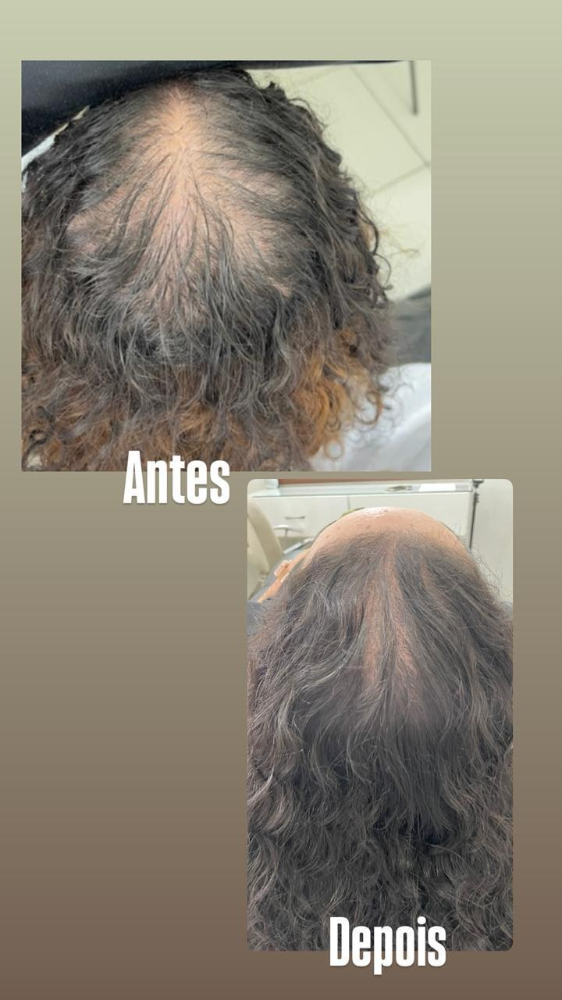
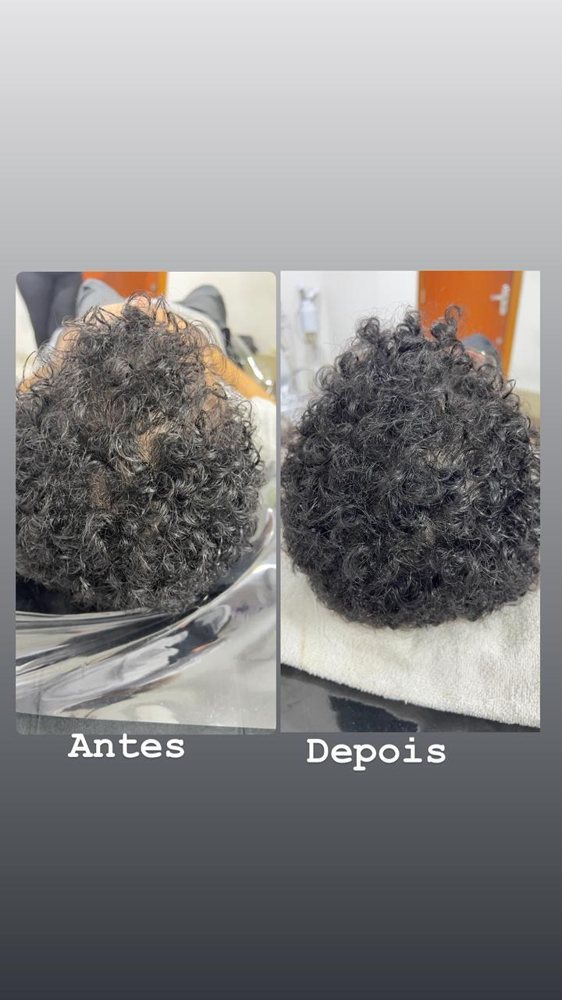
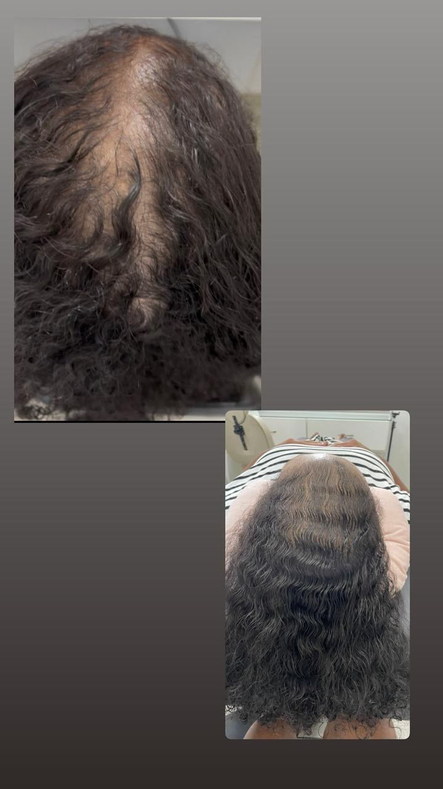

Diagnóstico baseado em evidência, protocolos validados e a sua evolução documentada — do antes ao depois. Aqui, cada resultado é construído com técnica e comprovado com método.

Diagnóstico baseado em evidência, nunca em intuição. Cada protocolo segue parâmetros validados cientificamente — e adaptados ao seu caso.
Do ambiente à comunicação, cada ponto de contato foi projetado para transmitir cuidado absoluto e exclusividade.
Documentamos a sua evolução: antes, durante e depois de cada etapa. Resultado que se vê e que se comprova.
Helenice Moreira é terapeuta capilar integrativa. Une rigor clínico a um olhar humanizado: trata a saúde do cabelo como reflexo do equilíbrio do organismo como um todo.
Cada atendimento começa por uma avaliação criteriosa — histórico, necessidades e objetivos. Só a partir desse diagnóstico o protocolo é definido. Com responsabilidade, precisão e transparência total.
O compromisso vai além do resultado visível: é com a saúde, o bem-estar e a confiança de cada pessoa atendida.
O cuidado verdadeiro começa pela escuta e vai além do que os olhos enxergam.
A terapia capilar integrativa entende a saúde do cabelo como um reflexo do equilíbrio interno. O tratamento não começa pelo produto — começa pela pessoa.
Análise do couro cabeludo, histórico de saúde, hábitos e objetivos antes de qualquer intervenção.
Definição de um plano exclusivo, baseado no diagnóstico — sem fórmulas genéricas.
Procedimentos conduzidos com critério, produtos selecionados e biossegurança rigorosa.
Registro da evolução e ajustes contínuos. O resultado é construído, não prometido.
Recuperação, fortalecimento e equilíbrio dos fios e do couro cabeludo com protocolos clínicos especializados.
Tratamento principalAnálise completa do couro cabeludo, da estrutura dos fios e dos fatores que influenciam a saúde capilar.
Ponto de partidaLimpeza profunda, regulação de oleosidade e alívio de descamação com técnicas e ativos específicos.
Saúde capilarEstímulo da microcirculação para favorecer a absorção de ativos e o crescimento saudável dos fios.
Tratamento avançadoAbordagens complementares que consideram o equilíbrio do organismo na promoção da saúde capilar.
Visão integrativaSuporte durante o tratamento, orientações de cuidado em casa e ajustes conforme a evolução.
ContínuoCasos reais com acompanhamento completo. Resultados individuais variam conforme histórico de saúde e aderência ao protocolo indicado.




Cada pessoa é única. O protocolo nasce da sua avaliação individual, histórico e objetivos.
O cuidado capilar é tratado como parte da saúde global. Consideramos todos os fatores envolvidos.
Espaço clínico com rigorosos protocolos de assepsia, organização e biossegurança.
Técnicas e produtos selecionados com critério técnico, atualizados para cada condição.
Rigor clínico aliado à sensibilidade humana, desde a primeira consulta.
Compromisso com resultados éticos, progressivos e sustentáveis — sem promessas exageradas.
Ouça o que as pacientes têm a dizer sobre o tratamento e o atendimento.
Desde a primeira avaliação me senti segura. A Helenice explica cada passo com clareza. Os resultados vieram aos poucos, do jeito certo.
Profissionalismo do início ao fim. Cada etapa foi explicada, cada dúvida respondida. Recuperei a confiança no meu cabelo e em mim.
A abordagem integrativa fez toda a diferença. Nunca imaginei que o tratamento consideraria tantos aspectos da minha saúde. Me sinto cuidada de verdade.
Preencha os campos e você será direcionada para uma conversa personalizada no WhatsApp. Sem compromisso — apenas uma avaliação cuidadosa do seu caso.
Responda 3 campos e receba contato personalizado.
Próximo passo
Conheça um cuidado capilar pensado com técnica, atenção e segurança. O primeiro passo é uma conversa — sem compromisso, com dedicação total à sua saúde.